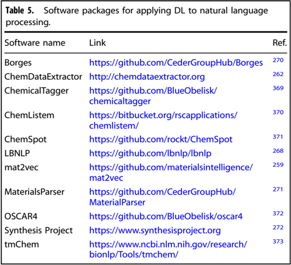
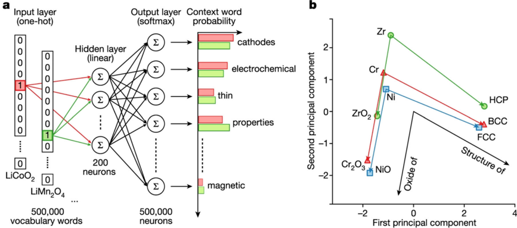

laro, aquí tienes un resumen detallado del artículo de revisión “Recent advances and applications of deep learning methods in materials science”, haciendo especial énfasis en los pies de figura y las ilustraciones clave mencionadas:
Resumen General
El artículo presenta una revisión exhaustiva de los métodos de aprendizaje profundo (DL) aplicados a la ciencia de materiales, abarcando representaciones atomísticas, imágenes, espectros y procesamiento de lenguaje natural. Destaca cómo el DL acelera el descubrimiento y diseño de materiales, superando limitaciones de métodos tradicionales.
Figuras y Captiones Importantes
Figura 1: Esquema de IA, ML y DL en Ciencia de Materiales
Caption: “Esquema que muestra una visión general de la inteligencia artificial (IA), el aprendizaje automático (ML) y el aprendizaje profundo (DL), y sus aplicaciones en ciencia e ingeniería de materiales. El DL se considera parte del ML, que a su vez está contenido en el término general de IA.”
Importancia: Establece el contexto jerárquico y la relación entre IA, ML y DL, y cómo se aplican en el dominio de los materiales.
Figura 2: Modelos de Redes Neuronales de Grafos para Predicción de Propiedades
Caption: “Esquema de modelos como SchNet, CGCNN, MEGNet, iCGCNN, DimeNet y ALIGNN utilizados para predecir propiedades de materiales cristalinos y moleculares a partir de configuraciones atomísticas.”
Importancia: Ilustra cómo las redes neuronales de grafos (GNN) capturan interacciones atómicas y predicen propiedades como energía de formación, bandgap, módulo elástico, etc.
Figura 3: Aplicaciones de DL para Datos Espectrales
Caption (3a): “Predicción de información estructural a partir de difracción de rayos X (XRD).”
Caption (3b): “Predicción de propiedades de catálisis a partir de datos computacionales de densidad de estados electrónicos.”
Importancia: Muestra cómo el DL se utiliza para:
Identificar fases y estructuras cristalinas a partir de espectros de XRD.
Relacionar espectros de densidad de estados (DOS) con propiedades de adsorción catalítica.
Figura 4: Segmentación de Átomos con U-Net en Imágenes STEM
Caption: “Algoritmo basado en DL (U-Net) para clasificación de sitios atómicos en imágenes de STEM de WSe₂. (a) Arquitectura U-Net. (b) Ejemplos de datos de entrenamiento para cinco especies atómicas. (c) Precisión del modelo durante el entrenamiento. (d) Comparación de precisión entre el modelo y mediciones humanas.”
Importancia: Demuestra la capacidad del DL para:
Identificar y clasificar átomos y vacantes en imágenes de microscopía de alta resolución.
Lograr una precisión superior a la humana en la cuantificación de defectos atómicos.
Aplicaciones Clave por Modalidad de Datos
Representaciones Atomísticas:
Force Fields (FF): Desarrollo de potenciales interatómicos con redes neuronales (ej. BPNN, GNNFF).
Predicción Directa de Propiedades: Modelos como CGCNN, ALIGNN predicen energías, bandgaps, propiedades elásticas, etc.
Datos Espectrales:
XRD, XAS, Raman: Clasificación de grupos espaciales, identificación de fases, y predicción de parámetros estructurales.
Ejemplo: CNNs entrenadas con datos sintéticos logran >90% de precisión en clasificación de sistemas cristalinos.
Imágenes:
Clasificación y Segmentación: Identificación de fases, defectos, y orientaciones cristalinas en SEM, TEM, EBSD.
Super-Resolución y Ajuste Automático: GANs para mejorar resolución y modelos que ajustan parámetros experimentales en tiempo real.
Procesamiento de Lenguaje Natural (NLP):
Extracción automática de datos de síntesis y propiedades desde la literatura.
Predicción de aplicaciones materiales mediante embeddings de palabras (ej. Word2Vec).
Limitaciones y Desafíos
Calidad de Datos: Ruido en datos experimentales, falta de estandarización.
Interpretabilidad: Naturaleza de “caja negra” de los modelos DL.
Generalización: Dificultad para extrapolar más allá de los datos de entrenamiento.
Cuantificación de Incertidumbre: Necesidad de métodos robustos para evaluar la confiabilidad de las predicciones.
Recursos Destacados
Repositorio GitHub: https://github.com/deepmaterials/dlmatreview
Bases de Datos Públicas: Materials Project, JARVIS, OQMD, AFLOW, entre otras.
Software Común: PyTorch, TensorFlow, SchNetPack, CGCNN, ALIGNN, DeepChem.
Conclusión
El DL está transformando la ciencia de materiales al permitir:
Análisis automatizado de grandes volúmenes de datos complejos.
Descubrimiento acelerado de materiales con propiedades deseadas.
Integración con métodos físicos y experimentales para un diseño racional.
Si necesitas que profundice en alguna figura, aplicación o técnica específica, házmelo saber.
Figuras del Paper (35)
Sin caption
Figura en pagina 1.
Sin caption
Figura en pagina 1.
Sin caption
Figura en pagina 1.
Sin caption
Figura en pagina 2.

Fig. 1 Schematic showing an overview of arti fi cial intelligence (AI), machine learning (ML), and deep learning (DL) methods and its applications in materials science and engineering. Deep learning is considered a part of machine learning, which is contained in an umbrella term arti fi cial intelligence.
Fig. 1 Schematic showing an overview of arti fi cial intelligence (AI), machine learning (ML), and deep learning (DL) methods and its applications in materials science and engineering. Deep learning is considered a part of machine learning, which is contained in an umbrella term arti fi cial intelligence.

Sin caption
Figura en pagina 3.
Sin caption
Figura en pagina 4.
Sin caption
Figura en pagina 5.

Sin caption
Figura en pagina 6.

Sin caption
Figura en pagina 7.

Fig. 2 Schematic representations of an atomic structure as a graph. a CGCNN model in which crystals are converted to graphs with nodes representing atoms in the unit cell and edges representing atom connections. Nodes and edges are characterized by vectors corresponding to the atoms and bonds in the crystal, respectively [Reprinted with permission from ref. 67 Copyright 2019 American Physical Society], b ALIGNN 65 model in which the convolution layer alternates between message passing on the bond graph and its bond-angle line graph. c MEGNet in which the initial graph is represented by the set of atomic attributes, bond attributes and global state attributes [Reprinted with permission from ref. 33 Copyright 2019 American Chemical Society] model, d iCGCNN model in which multiple edges connect a node to neighboring nodes to show the number of Voronoi neighbors [Reprinted with permission from ref. 122 Copyright 2019 American Physical Society].
Fig. 2 Schematic representations of an atomic structure as a graph. a CGCNN model in which crystals are converted to graphs with nodes representing atoms in the unit cell and edges representing atom connections. Nodes and edges are characterized by vectors corresponding to the atoms and bonds in the crystal, respectively [Reprinted with permission from ref. 67 Copyright 2019 American Physical Society], b ALIGNN 65 model in which the convolution layer alternates between message passing on the bond graph and its bond-angle line graph. c MEGNet in which the initial graph is represented by the set of atomic attributes, bond attributes and global state attributes [Reprinted with permission from ref. 33 Copyright 2019 American Chemical Society] model, d iCGCNN model in which multiple edges connect a node to neighboring nodes to show the number of Voronoi neighbors [Reprinted with permission from ref. 122 Copyright 2019 American Physical Society].

Sin caption
Figura en pagina 8.

Sin caption
Figura en pagina 9.

Fig. 3 Example applications of deep learning for spectral data. a Predicting structure information from the X-ray diffraction 374 , Reprinted according to the terms of the CC-BY license 374 . Copyright 2020. b Predicting catalysis properties from computational electronic density of states data. Reprinted according to the terms of the CC-BY license 202 . Copyright 2021.
Fig. 3 Example applications of deep learning for spectral data. a Predicting structure information from the X-ray diffraction 374 , Reprinted according to the terms of the CC-BY license 374 . Copyright 2020. b Predicting catalysis properties from computational electronic density of states data. Reprinted according to the terms of the CC-BY license 202 . Copyright 2021.

Sin caption
Figura en pagina 10.
Sin caption
Figura en pagina 11.
Sin caption
Figura en pagina 12.

Sin caption
Figura en pagina 13.
Sin caption
Figura en pagina 14.

Fig. 4 Deep-learning-based algorithm for atomic site classi fi cation. a Deep neural networks U-Net model constructed for quanti fi cation analysis of annular dark- fi eld in the scanning transmission electron microscope (ADF-STEM) image of V-WSe2. b Examples of training dataset for deep learning of atom segmentation model for fi ve different species. c Pixel-level accuracy of the atom segmentation model as a function of training epoch. d Measurement accuracy of the segmentation model compared with human-based measurements. Scale bars are 1 nm [Reprinted according to the terms of the CC-BY license ref. 228 ].
Fig. 4 Deep-learning-based algorithm for atomic site classi fi cation. a Deep neural networks U-Net model constructed for quanti fi cation analysis of annular dark- fi eld in the scanning transmission electron microscope (ADF-STEM) image of V-WSe2. b Examples of training dataset for deep learning of atom segmentation model for fi ve different species. c Pixel-level accuracy of the atom segmentation model as a function of training epoch. d Measurement accuracy of the segmentation model compared with human-based measurements. Scale bars are 1 nm [Reprinted according to the terms of the CC-BY license ref. 228 ].
Sin caption
Figura en pagina 15.

Sin caption
Figura en pagina 16.

Sin caption
Figura en pagina 17.

Sin caption
Figura en pagina 17.
Sin caption
Figura en pagina 18.

Fig. 5 A schematic showing the application of skip-gram variation of Word2vec for predicting context words. a Network for training word embeddings for natural language processing application. A one-hot encoded vector at left represents each distinct word in the corpus; the role of a hidden layer is to predict the probability of neighboring words in the corpus. This network structure trains a relatively small hidden layer of 100 -200 neurons to contain information on the context of words in the entire corpus, with the result that similar words end up with similar hidden layer weights (word embeddings). Such word embeddings can transform wordsin text form into numerical vectors that may be useful for a variety of applications. b projection of word embeddings for various materials science words, as trained on a corpus scienti fi c abstracts, into two dimensions using principle components analysis. Without any explicit training, the word embeddings naturally preserve relationships between chemical formulas, their common oxides, and their ground state structures. [Reprinted according to the terms of the CC-BY license ref. 259 ].
Fig. 5 A schematic showing the application of skip-gram variation of Word2vec for predicting context words. a Network for training word embeddings for natural language processing application. A one-hot encoded vector at left represents each distinct word in the corpus; the role of a hidden layer is to predict the probability of neighboring words in the corpus. This network structure trains a relatively small hidden layer of 100 -200 neurons to contain information on the context of words in the entire corpus, with the result that similar words end up with similar hidden layer weights (word embeddings). Such word embeddings can transform wordsin text form into numerical vectors that may be useful for a variety of applications. b projection of word embeddings for various materials science words, as trained on a corpus scienti fi c abstracts, into two dimensions using principle components analysis. Without any explicit training, the word embeddings naturally preserve relationships between chemical formulas, their common oxides, and their ground state structures. [Reprinted according to the terms of the CC-BY license ref. 259 ].
Sin caption
Figura en pagina 19.

Sin caption
Figura en pagina 20.

Sin caption
Figura en pagina 21.

Sin caption
Figura en pagina 22.

Sin caption
Figura en pagina 23.
Sin caption
Figura en pagina 24.

Sin caption
Figura en pagina 25.
Sin caption
Figura en pagina 26.
Sin caption
Figura en pagina 26.